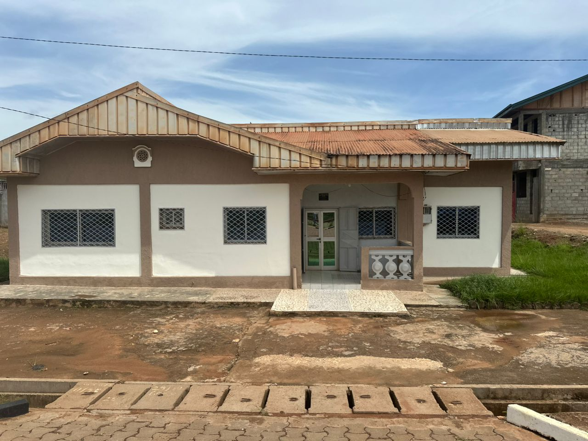

Avocate fondatrice
Me Ngo Diyani J. épouse Tawet
Avocate inscrite au Barreau du Cameroun, installée à Bertoua. Elle intervient tant en conseil qu'en contentieux, avec une pratique particulièrement développée en droit foncier et en droit des affaires, deux matières centrales pour les clients de la région de l'Est.
Langues de travail : français, anglais.